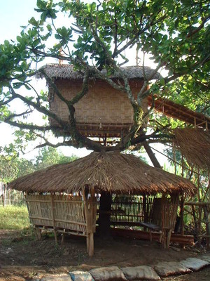
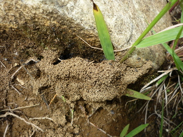
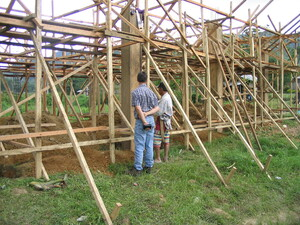

baley1   
/balɔy/
n.
“house”
1.
n.
house
Wrd.Gloss: house
Meupiya ne egpitawen ka baley niyu.
Your(pl) house looks good.
Eng. house
Tag. báhay
Ceb. balay
Ilo.: baláy
Binukid: balay
Sarangani: balay
Tigwanon: baley
WBM: baley
Ilianen: baley
Dibabawon: baey
Obo: baey
Cagayano: bałay
Kinamigin: baay
Tagbawa: bakɛ
Cotabato Manobo: balay+laget 'brass betel nut box'
Proto: balay
OCM: Dwellings (342)
Online dict status: -
Usage level: B
v.
for someone (egbebaley, migbebaley/imbabeley, bebaley, agent, eg><ø-rdpCV-) to build a house
Egbebaley ka amey ku diyè te ilis te highway.
My father is building a house beside the highway.
Eng. build house; erect house; housebuilding
Tag. magbahay
Ceb. magbalay
OCM: Construction (331)
Online dict status: -
Usage level: F
Usage level: M
adj.
(mababaley, mA1-rdpCV-) fond of building houses
Eng. fond of building houses
Online dict status: -
Usage level: R
n.
(balbalayen, rdpCVC–en) a toy house
Eng. toy house; doll's house; house, doll's
Online dict status: -
Usage level: R
Updated by: RJH,JLM,QDL,RJH,RAA,QDL
Last updated: 18/Dec/2009
"baley" in text "Violence at Palakpakan Fiesta"
"baley" in text "Dreaming of being Rich"
"baley" in text "Two carabaos fighting"
"baley" in text "Aurelio's Marriage"
"baley" in text "Morning Darkness"
"baley" in text "Death of a Young Man"
"baley" in text "A Father Tells His Children about School"
"baley" in text "Proving Innocence I (When Accused of Theft)"
"baley" in text "Preparing Ground Corn"
This page last updated: 19/May/2012
Copyright © 2009-2010, Matigsalug Language Christian Association, Inc